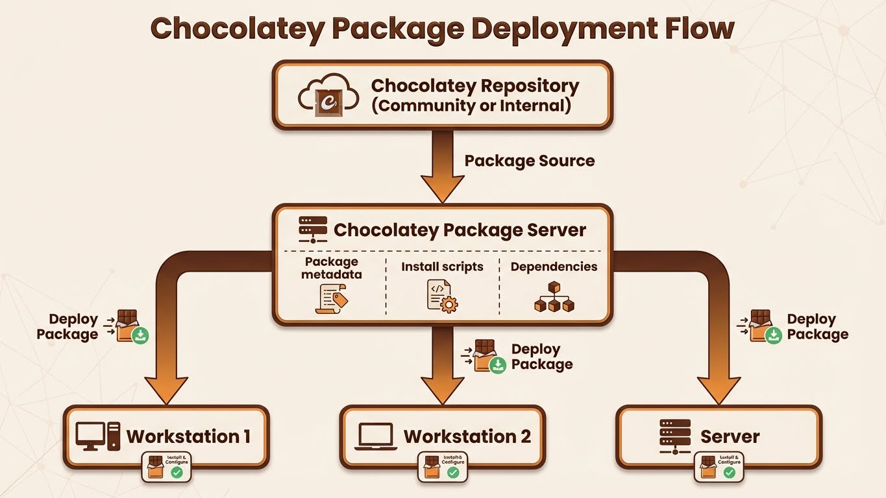

Module 3 : Serveur Privé - L'Usine Logicielle
Introduction
"Public repos are for home. Private repos are for pros."
Jusqu'ici, vous avez utilisé chocolatey.org comme source de packages. Mais dans un environnement d'entreprise, cette approche pose plusieurs problèmes :
Pourquoi les repos publics ne suffisent pas en entreprise ?
| Problème | Impact |
|---|---|
| Dépendance Internet | Si chocolatey.org est down, vos déploiements sont bloqués |
| Packages non validés | Risque sécurité : packages communautaires non audités |
| Apps internes | Impossible de distribuer corpapp.nupkg sur chocolatey.org |
| Versions non figées | Un package peut être supprimé/modifié en upstream |
| Conformité | Pas de traçabilité (qui a installé quoi, quand ?) |
| Bande passante | Télécharger Firefox.exe (100 Mo) × 500 postes = 50 Go |
La solution : Repository Privé
Un repository Chocolatey privé est un serveur NuGet interne qui :
- ✅ Héberge vos packages : Apps internes (
corpapp,monitoring-agent) - ✅ Cache les packages publics : Miroir local de
chocolatey.org(proxy/cache) - ✅ Contrôle les versions : Figer Firefox 115.0 (ne jamais updater automatiquement)
- ✅ Fonctionne offline : Aucune dépendance Internet
- ✅ Traçabilité : Logs d'installation, audit
Cas d'usage typique :
Client Chocolatey
↓ (Priority 1)
Repository Interne (repo.corp.local)
├── Packages internes (corpapp, tools)
└── Cache packages publics (Firefox, Git, VSCode)
↓ (Si package non trouvé)
Repository Public (chocolatey.org) - DISABLED en production
Dans ce module, vous allez apprendre à :
- ✅ Comprendre le protocole NuGet v2/v3 utilisé par Chocolatey
- ✅ Comparer les solutions de repository (Chocolatey Server, Nexus, Artifactory)
- ✅ Installer et configurer Chocolatey Server Simple (IIS)
- ✅ Pousser des packages vers le repository (
choco push) - ✅ Configurer les clients pour utiliser le repository interne
- ✅ Désactiver chocolatey.org en production
Concept : Architecture Repository
Le Protocole NuGet
Chocolatey utilise le protocole NuGet (gestionnaire de packages .NET de Microsoft).
NuGet v2 vs v3 :
| Protocole | API | Support Chocolatey | Performance |
|---|---|---|---|
| NuGet v2 | OData (/api/v2/Packages) |
✅ Natif | 🐢 Lent (XML) |
| NuGet v3 | JSON (/v3/index.json) |
✅ Depuis Chocolatey 1.0 | ⚡ Rapide (JSON) |
Chocolatey Server Simple utilise NuGet v2 (suffisant pour petites/moyennes entreprises).
Endpoints NuGet v2 :
| Endpoint | Description | Exemple |
|---|---|---|
/api/v2/Packages |
Lister les packages | GET http://repo.corp.local/chocolatey/api/v2/Packages |
/api/v2/Packages()/$count |
Compter les packages | GET http://repo.corp.local/chocolatey/api/v2/Packages()/$count |
/api/v2/package/ |
Télécharger un package | GET http://repo.corp.local/chocolatey/api/v2/package/corpapp/1.0.0 |
/api/v2/package/ |
Pousser un package | PUT http://repo.corp.local/chocolatey/api/v2/package/ |
Options de Repository
Plusieurs solutions existent pour héberger un repository NuGet/Chocolatey.
Comparaison :
| Solution | Type | Difficulté | Coût | Multi-formats | UI Web | Recommandation |
|---|---|---|---|---|---|---|
| Chocolatey Server Simple | IIS (Windows) | ⭐ Facile | 🆓 Gratuit | ❌ NuGet uniquement | ⚠️ Basique | PME (<500 packages) |
| Nexus Repository OSS | Java (Cross-platform) | ⭐⭐ Moyen | 🆓 Gratuit | ✅ NuGet, Docker, Maven, npm | ✅ Avancée | Recommandé (PME/Grande entreprise) |
| Artifactory OSS | Java (Cross-platform) | ⭐⭐⭐ Complexe | 🆓 Gratuit (OSS) 💰 Payant (Pro) |
✅ Tous formats | ✅ Très avancée | Grande entreprise |
| ProGet | .NET (Windows/Linux) | ⭐⭐ Moyen | 💰 Payant | ✅ Tous formats | ✅ Avancée | Entreprise (support commercial) |
| Azure Artifacts | Cloud (Azure DevOps) | ⭐ Facile | 💰 Payant (usage) | ✅ Tous formats | ✅ Cloud | Entreprise (déjà sur Azure) |
| MyGet | Cloud SaaS | ⭐ Facile | 💰 Payant | ✅ NuGet, npm | ✅ Cloud | Startup/CI/CD |
Notre choix pour ce module : Chocolatey Server Simple
Pourquoi ?
- ✅ Gratuit et Open Source
- ✅ Installation en 1 commande (
choco install chocolatey-server) - ✅ Basé sur IIS (déjà présent sur Windows Server)
- ✅ Aucune dépendance externe (pas de Java, Docker, etc.)
- ✅ Parfait pour débuter (proof-of-concept)
Inconvénients :
- ❌ Pas de cache/proxy vers chocolatey.org (uniquement stockage local)
- ❌ Interface Web minimaliste
- ❌ Pas de gestion avancée (quotas, rétention, RBAC)
Pour production à grande échelle : préférer Nexus Repository OSS.
Flux de Distribution
flowchart LR
DEV[Développeur]
BUILD[Build Server<br/>CI/CD]
REPO[Repository Interne<br/>repo.corp.local]
CLIENT1[Workstation 1]
CLIENT2[Workstation 2]
CLIENT3[Workstation N]
INTERNET[chocolatey.org<br/>DISABLED]
DEV -->|1. Créer package| BUILD
BUILD -->|2. choco pack| BUILD
BUILD -->|3. choco push| REPO
REPO -->|4. choco install| CLIENT1
REPO -->|4. choco install| CLIENT2
REPO -->|4. choco install| CLIENT3
INTERNET -.->|5. Fallback BLOQUÉ| REPO
style REPO fill:#9C27B0,stroke:#333,stroke-width:3px
style INTERNET fill:#f44336,stroke:#333,stroke-width:2px,stroke-dasharray: 5 5
style BUILD fill:#2196F3,stroke:#333,stroke-width:2pxWorkflow :
- Développeur : Crée le package
corpapp.nupkg(Module 2) - CI/CD : Package automatiquement avec
choco pack - Push : Pousse vers le repository interne avec
choco push - Distribution : Les clients installent depuis le repository interne
- Isolation : chocolatey.org est désactivé (sécurité/conformité)
Architecture Réseau
Topologie recommandée :

┌─────────────────────────────────────────────────────┐
│ DMZ / Subnet Admin (VLAN 10) │
│ │
│ ┌──────────────────────────────────────┐ │
│ │ Chocolatey Repository Server │ │
│ │ - Windows Server 2022 │ │
│ │ - IIS 10.0 │ │
│ │ - Chocolatey Server Simple │ │
│ │ - URL: http://repo.corp.local │ │
│ │ - Port: 80 (HTTP) ou 443 (HTTPS) │ │
│ └──────────────────────────────────────┘ │
│ ▲ │
└────────────────────┼────────────────────────────────┘
│
┌─────────────┼─────────────┐
│ │ │
│ │ │
┌──────▼─────┐ ┌────▼──────┐ ┌───▼───────┐
│ Client 1 │ │ Client 2 │ │ Client N │
│ VLAN 20 │ │ VLAN 20 │ │ VLAN 20 │
└────────────┘ └───────────┘ └───────────┘
Firewall Rules :
| Source | Destination | Port | Protocole | Autoriser |
|---|---|---|---|---|
| Clients (VLAN 20) | Repo Server (VLAN 10) | 80 | HTTP | ✅ |
| Clients (VLAN 20) | Repo Server (VLAN 10) | 443 | HTTPS | ✅ |
| Repo Server | Internet | 80/443 | HTTP/HTTPS | ❌ Bloquer (optionnel) |
Pratique : Installation Chocolatey Server Simple
Prérequis
Serveur Windows :
- Windows Server 2016+ ou Windows 10/11 Pro (avec IIS)
- 4 GB RAM minimum
- 100 GB disque (pour stocker les packages)
- PowerShell 5.1+
- Chocolatey déjà installé
Vérifier IIS :
Si IIS n'est pas installé :
# Windows Server
Install-WindowsFeature -Name Web-Server -IncludeManagementTools
# Windows 10/11 Pro
Enable-WindowsOptionalFeature -Online -FeatureName IIS-WebServerRole
Étape 1 : Installer Chocolatey Server
Sortie attendue :
Chocolatey v2.2.2
Installing the following packages:
chocolatey-server
...
The install of chocolatey-server was successful.
Software installed to 'C:\tools\chocolatey-server'
Ce qui est installé :
- Application IIS dans
C:\tools\chocolatey-server - Site IIS
chocolatey-serversur le port80 - Répertoire de packages :
C:\tools\chocolatey-server\App_Data\Packages
Étape 2 : Vérifier le Site IIS
Ouvrir le Gestionnaire IIS (inetmgr.exe) :
Vérifier :
- Site
chocolatey-serverest présent - Port
80(ou configurer un autre port/binding) - Application Pool :
.NET v4.5
Tester l'accès :
Sortie attendue :
Accéder depuis un navigateur :
Vous devriez voir une page d'accueil basique avec un lien vers /api/v2/Packages.
Étape 3 : Configurer l'API Key
L'API Key protège le repository : seuls ceux qui la connaissent peuvent pousser des packages.
Éditer le fichier de configuration :
Chercher la section <appSettings> :
Définir une clé (exemple : admin123) :
⚠️ En production : utiliser une clé forte (GUID) :
Exemple de clé forte :
Sauvegarder et redémarrer IIS :
Étape 4 : Configurer les Permissions NTFS
Le compte IIS doit pouvoir écrire dans le répertoire Packages.
Vérifier le compte Application Pool :
Import-Module WebAdministration
$appPool = Get-Item "IIS:\AppPools\chocolatey-server"
$appPool.processModel.identityType
Sortie attendue :
Cela correspond au compte virtuel : IIS AppPool\chocolatey-server
Donner les permissions :
$PackagesPath = "C:\tools\chocolatey-server\App_Data\Packages"
$ACL = Get-Acl $PackagesPath
# Ajouter Full Control pour le compte IIS
$Permission = "IIS AppPool\chocolatey-server", "FullControl", "ContainerInherit,ObjectInherit", "None", "Allow"
$AccessRule = New-Object System.Security.AccessControl.FileSystemAccessRule $Permission
$ACL.SetAccessRule($AccessRule)
Set-Acl $PackagesPath $ACL
Vérifier :
Étape 5 : Configurer le Binding (Optionnel - HTTPS)
Par défaut, le serveur écoute sur http://localhost/chocolatey.
Pour utiliser un nom DNS (ex: repo.corp.local) :
- Créer un enregistrement DNS :
- Ajouter un binding IIS :
Import-Module WebAdministration
New-WebBinding -Name "chocolatey-server" -IPAddress "*" -Port 80 -HostHeader "repo.corp.local"
Pour HTTPS (recommandé en production) :
-
Obtenir un certificat SSL (Let's Encrypt, CA interne, certificat auto-signé)
-
Importer le certificat dans le magasin Windows :
Import-PfxCertificate -FilePath "C:\Certs\repo.corp.local.pfx" -CertStoreLocation Cert:\LocalMachine\My -Password (ConvertTo-SecureString "password" -AsPlainText -Force)
- Ajouter le binding HTTPS :
$Cert = Get-ChildItem -Path Cert:\LocalMachine\My | Where-Object {$_.Subject -like "*repo.corp.local*"}
New-WebBinding -Name "chocolatey-server" -Protocol https -Port 443 -HostHeader "repo.corp.local" -SslFlags 1
# Lier le certificat
$Binding = Get-WebBinding -Name "chocolatey-server" -Protocol https
$Binding.AddSslCertificate($Cert.Thumbprint, "my")
Pratique : Pousser des Packages
Étape 1 : Préparer le Package
Utiliser le package corpapp.nupkg créé dans le Module 2.
Vérifier que le fichier existe :
Étape 2 : Pousser vers le Repository
choco push "C:\Chocolatey\corpapp\corpapp.1.0.0.nupkg" `
--source "http://localhost/chocolatey" `
--api-key "admin123"
Paramètres :
| Paramètre | Description |
|---|---|
--source |
URL du repository NuGet |
--api-key |
Clé API définie dans web.config |
Sortie attendue :
Attempting to push corpapp.1.0.0.nupkg to http://localhost/chocolatey
corpapp 1.0.0 was pushed successfully to http://localhost/chocolatey
Étape 3 : Vérifier le Package
Via navigateur :
Vous devriez voir une entrée XML pour corpapp.
Via PowerShell :
Invoke-WebRequest -Uri "http://localhost/chocolatey/api/v2/Packages()?`$filter=Id eq 'corpapp'" | Select-Object -ExpandProperty Content
Via le système de fichiers :
Sortie attendue :
Pratique : Configuration Client
Étape 1 : Lister les Sources Actuelles
Sortie attendue :
Chocolatey v2.2.2
chocolatey - https://community.chocolatey.org/api/v2/ | Priority 0|Bypass Proxy - False|Self-Service - False|Admin Only - False.
Étape 2 : Ajouter le Repository Interne
choco source add `
--name="internal-repo" `
--source="http://repo.corp.local/chocolatey" `
--priority=1
Paramètres :
| Paramètre | Description |
|---|---|
--name |
Nom de la source (identifiant unique) |
--source |
URL du repository NuGet |
--priority |
Priorité (0 = plus haute, 1000 = plus basse) |
Sortie attendue :
Vérifier :
Sortie attendue :
internal-repo - http://repo.corp.local/chocolatey | Priority 1
chocolatey - https://community.chocolatey.org/api/v2/ | Priority 0
⚠️ Attention : Priority 0 est plus prioritaire que 1 !
Corriger la priorité :
# Repository interne en priorité 0 (première source)
choco source remove --name="internal-repo"
choco source add --name="internal-repo" --source="http://repo.corp.local/chocolatey" --priority=0
# Chocolatey.org en priorité 10 (fallback)
choco source remove --name="chocolatey"
choco source add --name="chocolatey" --source="https://community.chocolatey.org/api/v2/" --priority=10
Étape 3 : Désactiver chocolatey.org (Production)
En production, vous voulez bloquer l'accès à chocolatey.org pour :
- ✅ Forcer l'utilisation du repository interne
- ✅ Éviter les téléchargements non validés
- ✅ Respecter la conformité/sécurité
Désactiver la source :
Vérifier :
Sortie attendue :
internal-repo - http://repo.corp.local/chocolatey | Priority 0
chocolatey - https://community.chocolatey.org/api/v2/ [Disabled] | Priority 10
Étape 4 : Tester l'Installation depuis le Repo Interne
Sortie attendue :
Installing the following packages:
corpapp
By installing, you accept licenses for the packages.
corpapp v1.0.0
Downloading corpapp
from 'http://repo.corp.local/chocolatey/api/v2/package/corpapp/1.0.0'
...
The install of corpapp was successful.
✅ Le package vient bien du repository interne !
Configuration Avancée
1. Authentification (API Key pour choco install)
Par défaut, l'API Key est requise uniquement pour choco push.
Pour sécuriser aussi choco install :
Éditer C:\tools\chocolatey-server\web.config :
<appSettings>
<add key="apiKey" value="admin123" />
<add key="requireApiKey" value="true" />
</appSettings>
Redémarrer IIS :
Sur les clients, ajouter l'API Key :
choco source add `
--name="internal-repo" `
--source="http://repo.corp.local/chocolatey" `
--user="admin" `
--password="admin123"
Note : Le mot de passe est stocké chiffré dans C:\ProgramData\chocolatey\config\chocolatey.config.
2. Limitation des Tailles de Packages
Par défaut, IIS limite les uploads à 30 Mo.
Pour autoriser de gros packages (ex: 500 Mo) :
Éditer C:\tools\chocolatey-server\web.config :
<system.web>
<httpRuntime maxRequestLength="524288" executionTimeout="3600" />
</system.web>
<system.webServer>
<security>
<requestFiltering>
<requestLimits maxAllowedContentLength="524288000" />
</requestFiltering>
</security>
</system.webServer>
Explications :
| Paramètre | Valeur | Description |
|---|---|---|
maxRequestLength |
524288 |
Taille max (Ko) = 512 Mo |
maxAllowedContentLength |
524288000 |
Taille max (octets) = 500 Mo |
executionTimeout |
3600 |
Timeout (secondes) = 1 heure |
Redémarrer IIS :
3. Logging et Monitoring
Activer les logs IIS :
Set-WebConfigurationProperty -Filter "system.applicationHost/sites/site[@name='chocolatey-server']/logFile" -Name "enabled" -Value $true
Emplacement des logs :
Analyser les logs :
4. Sauvegarde Automatique
Script de sauvegarde journalière :
# backup-chocolatey-repo.ps1
$SourcePath = "C:\tools\chocolatey-server\App_Data\Packages"
$BackupPath = "D:\Backups\ChocolateyRepo\$(Get-Date -Format 'yyyy-MM-dd')"
# Créer le répertoire de backup
New-Item -Path $BackupPath -ItemType Directory -Force
# Copier les packages
Copy-Item -Path "$SourcePath\*" -Destination $BackupPath -Recurse
# Compresser
Compress-Archive -Path $BackupPath -DestinationPath "$BackupPath.zip" -Force
# Nettoyer les backups > 30 jours
Get-ChildItem "D:\Backups\ChocolateyRepo" -Filter "*.zip" |
Where-Object {$_.LastWriteTime -lt (Get-Date).AddDays(-30)} |
Remove-Item -Force
Write-Host "✅ Backup terminé : $BackupPath.zip"
Planifier avec Task Scheduler :
$Action = New-ScheduledTaskAction -Execute "PowerShell.exe" -Argument "-File C:\Scripts\backup-chocolatey-repo.ps1"
$Trigger = New-ScheduledTaskTrigger -Daily -At "02:00"
$Principal = New-ScheduledTaskPrincipal -UserId "SYSTEM" -LogonType ServiceAccount -RunLevel Highest
Register-ScheduledTask -TaskName "ChocolateyRepoBackup" -Action $Action -Trigger $Trigger -Principal $Principal
Automatisation : Déploiement avec Ansible
Playbook : Configurer les Clients
# configure-chocolatey-sources.yml
---
- name: Configure Chocolatey Sources
hosts: windows_workstations
gather_facts: no
vars:
internal_repo_url: "http://repo.corp.local/chocolatey"
internal_repo_priority: 0
disable_public_repo: true
tasks:
- name: Add internal repository
win_chocolatey_source:
name: internal-repo
source: "{{ internal_repo_url }}"
priority: "{{ internal_repo_priority }}"
state: present
- name: Disable chocolatey.org (if required)
win_chocolatey_source:
name: chocolatey
state: disabled
when: disable_public_repo | bool
- name: List configured sources
win_shell: choco source list
register: sources_output
- name: Display sources
debug:
var: sources_output.stdout_lines
Exécution :
Bonnes Pratiques
1. ✅ Utiliser HTTPS en Production
Pourquoi ?
- 🔐 Sécurité : Éviter l'interception des packages (MITM)
- 🔐 Intégrité : Garantir que les packages ne sont pas modifiés en transit
Comment ?
- Obtenir un certificat SSL (Let's Encrypt, CA interne)
- Configurer le binding HTTPS dans IIS
- Forcer HTTPS : rediriger HTTP → HTTPS
Redirection HTTP → HTTPS (web.config) :
<system.webServer>
<rewrite>
<rules>
<rule name="HTTP to HTTPS redirect" stopProcessing="true">
<match url="(.*)" />
<conditions>
<add input="{HTTPS}" pattern="off" ignoreCase="true" />
</conditions>
<action type="Redirect" url="https://{HTTP_HOST}/{R:1}" redirectType="Permanent" />
</rule>
</rules>
</rewrite>
</system.webServer>
2. ✅ Séparer les Environnements (Dev/Test/Prod)
Stratégie multi-repositories :
| Repository | URL | Usage |
|---|---|---|
choco-dev |
http://repo-dev.corp.local/chocolatey |
Packages en développement/test |
choco-prod |
http://repo-prod.corp.local/chocolatey |
Packages validés pour production |
Workflow :
- Développeur pousse vers
choco-dev - Tests automatisés (CI/CD)
- Si OK, promouvoir vers
choco-prod(copie manuelle ou script)
Script de promotion :
# promote-package.ps1
param(
[string]$PackageName,
[string]$Version
)
$DevRepo = "http://repo-dev.corp.local/chocolatey"
$ProdRepo = "http://repo-prod.corp.local/chocolatey"
$ApiKey = "admin123"
# Télécharger depuis Dev
$TempPath = "$env:TEMP\$PackageName.$Version.nupkg"
Invoke-WebRequest -Uri "$DevRepo/api/v2/package/$PackageName/$Version" -OutFile $TempPath
# Pousser vers Prod
choco push $TempPath --source $ProdRepo --api-key $ApiKey
Write-Host "✅ Package $PackageName $Version promu vers Production"
3. ✅ Versionner les Packages Strictement
Problème : Un package corpapp 1.0.0 est déployé, puis un développeur le modifie et re-pousse 1.0.0.
Solution : Bloquer les overwrites (immutabilité).
Configuration (web.config) :
Résultat : Tenter de pousser deux fois corpapp 1.0.0 → erreur.
Forcer une nouvelle version :
# ❌ MAUVAIS
choco push corpapp.1.0.0.nupkg # Deux fois = erreur
# ✅ BON
# Modifier corpapp.nuspec : <version>1.0.1</version>
choco pack
choco push corpapp.1.0.1.nupkg
4. ✅ Nettoyer les Anciennes Versions
Problème : Avec le temps, le repository accumule des centaines de versions (firefox.100.0.0, firefox.101.0.0, ..., firefox.120.0.0).
Solution : Script de rétention (garder les 3 dernières versions uniquement).
# cleanup-old-packages.ps1
$PackagesPath = "C:\tools\chocolatey-server\App_Data\Packages"
$KeepLastVersions = 3
# Grouper par nom de package (sans version)
$Packages = Get-ChildItem $PackagesPath -Filter "*.nupkg" |
ForEach-Object {
if ($_.Name -match "^(.+?)\.(\d+\.\d+\.\d+.*?)\.nupkg$") {
[PSCustomObject]@{
Name = $matches[1]
Version = [version]($matches[2] -replace '[^0-9.]','')
FullName = $_.FullName
CreationTime = $_.CreationTime
}
}
} | Group-Object -Property Name
# Pour chaque package, garder les N dernières versions
foreach ($Group in $Packages) {
$ToDelete = $Group.Group |
Sort-Object Version -Descending |
Select-Object -Skip $KeepLastVersions
foreach ($File in $ToDelete) {
Write-Host "🗑️ Suppression : $($File.FullName)"
Remove-Item $File.FullName -Force
}
}
Planifier en tâche mensuelle.
5. ✅ Monitorer l'Espace Disque
Script d'alerte :
# check-disk-space.ps1
$Disk = Get-PSDrive -Name C
$FreeSpaceGB = [math]::Round($Disk.Free / 1GB, 2)
$ThresholdGB = 20
if ($FreeSpaceGB -lt $ThresholdGB) {
$Subject = "⚠️ ALERTE : Espace disque faible sur Chocolatey Repository"
$Body = "Espace libre : $FreeSpaceGB GB (seuil : $ThresholdGB GB)"
# Envoyer un email (configurer Send-MailMessage)
Send-MailMessage -To "admin@corp.local" -From "repo@corp.local" -Subject $Subject -Body $Body -SmtpServer "smtp.corp.local"
Write-Host "⚠️ Alerte envoyée"
} else {
Write-Host "✅ Espace disque OK : $FreeSpaceGB GB"
}
Exercice : Monter le Repo
Contexte
Vous êtes SysOps dans TechCorp (infrastructure 100 workstations Windows).
Votre direction veut centraliser la distribution de packages Chocolatey pour :
- Distribuer l'application interne
corpapp(créée au Module 2) - Bloquer l'accès à chocolatey.org (conformité sécurité)
- Avoir un point central de contrôle
Mission :
- Installer Chocolatey Server Simple sur votre machine (ou une VM)
- Configurer l'API Key
admin123 - Pousser le package
corpapp.1.0.0.nupkgvers le repository - Configurer votre client pour utiliser uniquement le repository interne
- Installer
corpappdepuis le repository interne - Vérifier que chocolatey.org est bien désactivé
Prérequis
- Windows 10/11 ou Windows Server avec IIS
- Chocolatey installé
- Package
corpapp.1.0.0.nupkg(du Module 2)
Étapes
1. Installer Chocolatey Server
2. Configurer l'API Key
Éditer C:\tools\chocolatey-server\web.config :
Redémarrer IIS :
3. Pousser le Package
choco push "C:\Chocolatey\corpapp\corpapp.1.0.0.nupkg" `
--source "http://localhost/chocolatey" `
--api-key "admin123"
4. Configurer le Client
# Ajouter le repository interne (priorité 0)
choco source add --name="internal-repo" --source="http://localhost/chocolatey" --priority=0
# Désactiver chocolatey.org
choco source disable --name="chocolatey"
5. Installer corpapp
6. Vérifier
Solution Complète
Solution : Script d'Installation Automatisé
Fichier : setup-chocolatey-repo.ps1
#Requires -RunAsAdministrator
# setup-chocolatey-repo.ps1
# Installation et configuration complète Chocolatey Server Simple
$ErrorActionPreference = 'Stop'
# VARIABLES DE CONFIGURATION
$ApiKey = "admin123"
$RepoUrl = "http://localhost/chocolatey"
$PackagePath = "C:\Chocolatey\corpapp\corpapp.1.0.0.nupkg"
Write-Host "=========================================" -ForegroundColor Cyan
Write-Host "🍫 CHOCOLATEY SERVER SETUP" -ForegroundColor Cyan
Write-Host "=========================================" -ForegroundColor Cyan
# STEP 1 : Vérifier les prérequis
Write-Host ""
Write-Host "📋 Step 1: Vérification des prérequis..." -ForegroundColor Yellow
# Vérifier que Chocolatey est installé
if (-not (Get-Command choco -ErrorAction SilentlyContinue)) {
Write-Host "❌ Chocolatey n'est pas installé. Installation..." -ForegroundColor Red
Set-ExecutionPolicy Bypass -Scope Process -Force
[System.Net.ServicePointManager]::SecurityProtocol = [System.Net.ServicePointManager]::SecurityProtocol -bor 3072
iex ((New-Object System.Net.WebClient).DownloadString('https://community.chocolatey.org/install.ps1'))
} else {
Write-Host "✅ Chocolatey est installé" -ForegroundColor Green
}
# Vérifier que IIS est installé
$IIS = Get-WindowsFeature -Name Web-Server -ErrorAction SilentlyContinue
if (-not $IIS -or $IIS.InstallState -ne "Installed") {
Write-Host "❌ IIS n'est pas installé. Installation..." -ForegroundColor Red
if ([Environment]::OSVersion.Version.Major -eq 10) {
# Windows 10/11
Enable-WindowsOptionalFeature -Online -FeatureName IIS-WebServerRole -All -NoRestart
} else {
# Windows Server
Install-WindowsFeature -Name Web-Server -IncludeManagementTools
}
Write-Host "✅ IIS installé" -ForegroundColor Green
} else {
Write-Host "✅ IIS est installé" -ForegroundColor Green
}
# STEP 2 : Installer Chocolatey Server
Write-Host ""
Write-Host "📋 Step 2: Installation Chocolatey Server..." -ForegroundColor Yellow
$ServerInstalled = choco list --local-only chocolatey-server | Select-String "chocolatey-server"
if (-not $ServerInstalled) {
choco install chocolatey-server -y
Write-Host "✅ Chocolatey Server installé" -ForegroundColor Green
} else {
Write-Host "ℹ️ Chocolatey Server déjà installé" -ForegroundColor Cyan
}
# STEP 3 : Configurer l'API Key
Write-Host ""
Write-Host "📋 Step 3: Configuration API Key..." -ForegroundColor Yellow
$WebConfigPath = "C:\tools\chocolatey-server\web.config"
if (Test-Path $WebConfigPath) {
# Lire le fichier XML
[xml]$WebConfig = Get-Content $WebConfigPath
# Chercher la clé apiKey
$ApiKeyNode = $WebConfig.configuration.appSettings.add | Where-Object { $_.key -eq "apiKey" }
if ($ApiKeyNode) {
$ApiKeyNode.value = $ApiKey
Write-Host "✅ API Key configurée : $ApiKey" -ForegroundColor Green
} else {
# Créer la clé si elle n'existe pas
$NewNode = $WebConfig.CreateElement("add")
$NewNode.SetAttribute("key", "apiKey")
$NewNode.SetAttribute("value", $ApiKey)
$WebConfig.configuration.appSettings.AppendChild($NewNode)
Write-Host "✅ API Key créée : $ApiKey" -ForegroundColor Green
}
# Sauvegarder
$WebConfig.Save($WebConfigPath)
} else {
Write-Host "❌ web.config introuvable : $WebConfigPath" -ForegroundColor Red
exit 1
}
# STEP 4 : Configurer les permissions NTFS
Write-Host ""
Write-Host "📋 Step 4: Configuration permissions NTFS..." -ForegroundColor Yellow
$PackagesPath = "C:\tools\chocolatey-server\App_Data\Packages"
if (Test-Path $PackagesPath) {
$ACL = Get-Acl $PackagesPath
$Permission = "IIS AppPool\chocolatey-server", "FullControl", "ContainerInherit,ObjectInherit", "None", "Allow"
$AccessRule = New-Object System.Security.AccessControl.FileSystemAccessRule $Permission
$ACL.SetAccessRule($AccessRule)
Set-Acl $PackagesPath $ACL
Write-Host "✅ Permissions NTFS configurées" -ForegroundColor Green
} else {
Write-Host "⚠️ Répertoire Packages introuvable : $PackagesPath" -ForegroundColor Yellow
}
# STEP 5 : Redémarrer IIS
Write-Host ""
Write-Host "📋 Step 5: Redémarrage IIS..." -ForegroundColor Yellow
iisreset /restart | Out-Null
Start-Sleep -Seconds 5
Write-Host "✅ IIS redémarré" -ForegroundColor Green
# STEP 6 : Tester l'accès au repository
Write-Host ""
Write-Host "📋 Step 6: Test d'accès au repository..." -ForegroundColor Yellow
try {
$Response = Invoke-WebRequest -Uri "$RepoUrl/api/v2/Packages" -UseBasicParsing
if ($Response.StatusCode -eq 200) {
Write-Host "✅ Repository accessible : $RepoUrl" -ForegroundColor Green
}
} catch {
Write-Host "❌ Impossible d'accéder au repository : $_" -ForegroundColor Red
exit 1
}
# STEP 7 : Pousser le package corpapp (si disponible)
Write-Host ""
Write-Host "📋 Step 7: Push du package corpapp..." -ForegroundColor Yellow
if (Test-Path $PackagePath) {
choco push $PackagePath --source $RepoUrl --api-key $ApiKey --force
Write-Host "✅ Package corpapp poussé vers le repository" -ForegroundColor Green
} else {
Write-Host "⚠️ Package corpapp introuvable : $PackagePath" -ForegroundColor Yellow
Write-Host " Créer le package avec le Module 2 avant de continuer." -ForegroundColor Yellow
}
# STEP 8 : Configurer les sources Chocolatey
Write-Host ""
Write-Host "📋 Step 8: Configuration des sources Chocolatey..." -ForegroundColor Yellow
# Supprimer les sources existantes (nettoyage)
$ExistingSources = choco source list | Select-String "internal-repo"
if ($ExistingSources) {
choco source remove --name="internal-repo"
}
# Ajouter le repository interne
choco source add --name="internal-repo" --source=$RepoUrl --priority=0
Write-Host "✅ Source 'internal-repo' ajoutée (priorité 0)" -ForegroundColor Green
# Désactiver chocolatey.org
choco source disable --name="chocolatey"
Write-Host "✅ Source 'chocolatey' désactivée" -ForegroundColor Green
# STEP 9 : Tester l'installation de corpapp
Write-Host ""
Write-Host "📋 Step 9: Test installation corpapp depuis le repository..." -ForegroundColor Yellow
# Désinstaller si déjà présent
$CorpAppInstalled = choco list --local-only corpapp | Select-String "corpapp"
if ($CorpAppInstalled) {
choco uninstall corpapp -y
}
# Installer depuis le repository interne
choco install corpapp -y
# Vérifier
$CorpAppInstalled = choco list --local-only corpapp | Select-String "corpapp"
if ($CorpAppInstalled) {
Write-Host "✅ corpapp installé avec succès depuis le repository interne" -ForegroundColor Green
} else {
Write-Host "❌ Échec de l'installation de corpapp" -ForegroundColor Red
}
# STEP 10 : Afficher le récapitulatif
Write-Host ""
Write-Host "=========================================" -ForegroundColor Cyan
Write-Host "✅ INSTALLATION TERMINÉE" -ForegroundColor Cyan
Write-Host "=========================================" -ForegroundColor Cyan
Write-Host ""
Write-Host "🔧 Configuration :" -ForegroundColor Yellow
Write-Host " Repository URL : $RepoUrl" -ForegroundColor White
Write-Host " API Key : $ApiKey" -ForegroundColor White
Write-Host " Packages Path : $PackagesPath" -ForegroundColor White
Write-Host ""
Write-Host "📦 Sources Chocolatey :" -ForegroundColor Yellow
choco source list
Write-Host ""
Write-Host "📊 Packages installés :" -ForegroundColor Yellow
choco list --local-only
Write-Host ""
Write-Host "🔧 Prochaines étapes :" -ForegroundColor Yellow
Write-Host " 1. Accéder à l'interface Web : $RepoUrl" -ForegroundColor White
Write-Host " 2. Pousser d'autres packages : choco push monpackage.nupkg --source $RepoUrl --api-key $ApiKey" -ForegroundColor White
Write-Host " 3. Configurer d'autres clients : choco source add --name='internal-repo' --source='$RepoUrl'" -ForegroundColor White
Write-Host " 4. Configurer HTTPS (production) : voir bonnes pratiques" -ForegroundColor White
Write-Host ""
Exécution :
Sortie attendue :
=========================================
🍫 CHOCOLATEY SERVER SETUP
=========================================
📋 Step 1: Vérification des prérequis...
✅ Chocolatey est installé
✅ IIS est installé
📋 Step 2: Installation Chocolatey Server...
✅ Chocolatey Server installé
📋 Step 3: Configuration API Key...
✅ API Key configurée : admin123
📋 Step 4: Configuration permissions NTFS...
✅ Permissions NTFS configurées
📋 Step 5: Redémarrage IIS...
✅ IIS redémarré
📋 Step 6: Test d'accès au repository...
✅ Repository accessible : http://localhost/chocolatey
📋 Step 7: Push du package corpapp...
✅ Package corpapp poussé vers le repository
📋 Step 8: Configuration des sources Chocolatey...
✅ Source 'internal-repo' ajoutée (priorité 0)
✅ Source 'chocolatey' désactivée
📋 Step 9: Test installation corpapp depuis le repository...
✅ corpapp installé avec succès depuis le repository interne
=========================================
✅ INSTALLATION TERMINÉE
=========================================
🔧 Configuration :
Repository URL : http://localhost/chocolatey
API Key : admin123
Packages Path : C:\tools\chocolatey-server\App_Data\Packages
📦 Sources Chocolatey :
internal-repo - http://localhost/chocolatey | Priority 0
chocolatey - https://community.chocolatey.org/api/v2/ [Disabled] | Priority 10
📊 Packages installés :
corpapp 1.0.0
🔧 Prochaines étapes :
1. Accéder à l'interface Web : http://localhost/chocolatey
2. Pousser d'autres packages : choco push monpackage.nupkg --source http://localhost/chocolatey --api-key admin123
3. Configurer d'autres clients : choco source add --name='internal-repo' --source='http://localhost/chocolatey'
4. Configurer HTTPS (production) : voir bonnes pratiques
Points Clés à Retenir
✅ Repository Privé
- Protocole NuGet v2/v3 : Standard pour Chocolatey
- Solutions : Chocolatey Server Simple (IIS), Nexus, Artifactory
- Avantages : Contrôle, offline, sécurité, conformité
✅ Installation Chocolatey Server Simple
- 1 commande :
choco install chocolatey-server - Configuration : API Key dans
web.config - Permissions : NTFS pour
IIS AppPool\chocolatey-server
✅ Push de Packages
- Commande :
choco push package.nupkg --source URL --api-key KEY - Stockage :
C:\tools\chocolatey-server\App_Data\Packages
✅ Configuration Client
- Ajouter source :
choco source add --name internal-repo --source URL --priority 0 - Désactiver chocolatey.org :
choco source disable --name chocolatey - Priorité : 0 = plus haute (utiliser en premier)
✅ Bonnes Pratiques
- ✅ HTTPS en production (SSL/TLS)
- ✅ Séparer Dev/Test/Prod (multi-repositories)
- ✅ Immutabilité (bloquer overwrites)
- ✅ Rétention (nettoyer anciennes versions)
- ✅ Sauvegarde automatique (backups journaliers)
Prochaines Étapes
Dans le Module 4 : Déploiement Automatisé, vous allez apprendre à :
- Déployer des packages via GPO (Group Policy Objects)
- Automatiser avec Ansible (playbooks Windows)
- Intégrer avec Intune/SCCM (MDM moderne)
- Créer des pipelines CI/CD pour packager automatiquement
Vous avez maintenant un repository Chocolatey privé fonctionnel ! 🍫
Ressources :
Retour au : Programme de la Formation | Catalogue des Formations
Navigation
| ← Module 2 : Création de Paquets - Deve... | Module 4 : Déploiement de Masse - Ind... → |